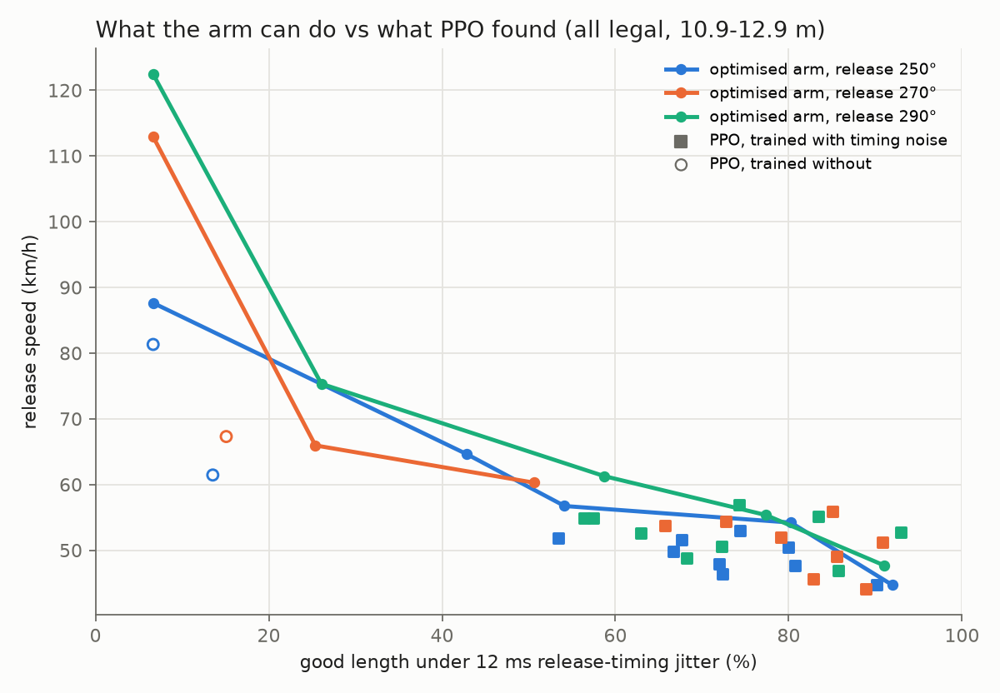
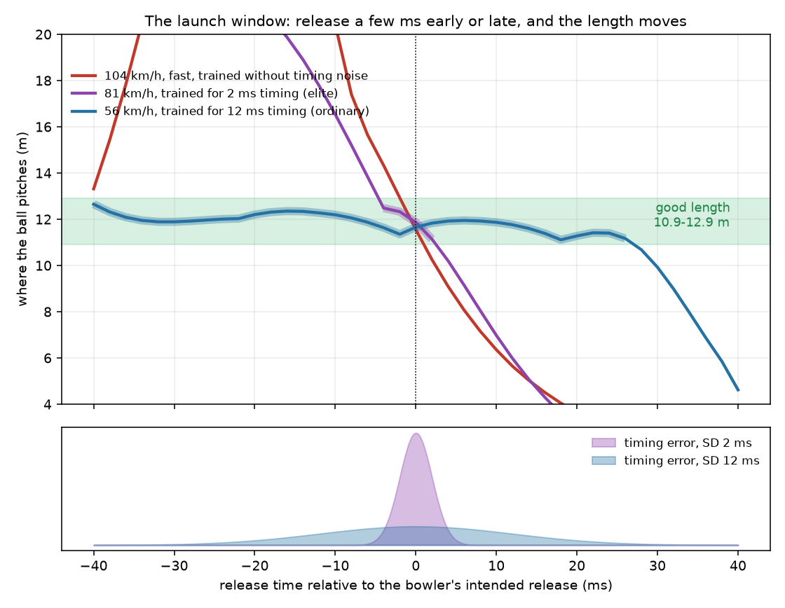
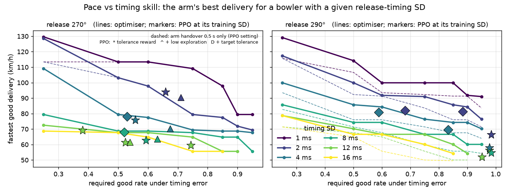
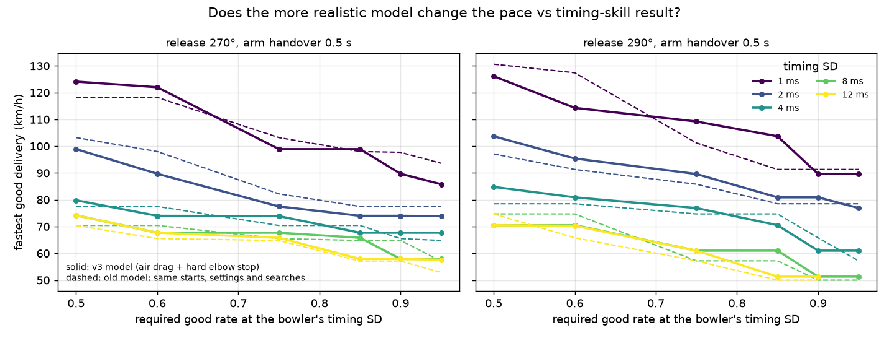
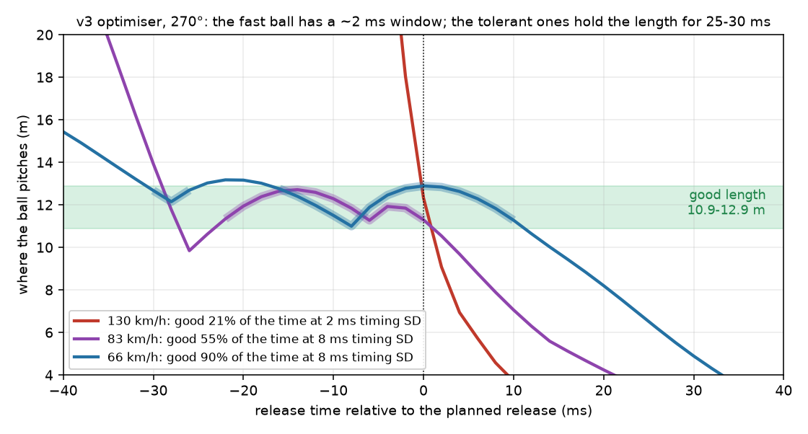

ACOD310 mini project (supervisor: Dr Alap Kshirsagar). Written 20 Nov 2026 to teach you every step, so you can explain it in your own words. Each section opens with the idea in one plain sentence, then the details. The green boxes are lines you can say.
The simulated bowler is the real bowler's motion capture, with only the bowling arm learned by RL.
Even paying up to 12× more for pace, PPO stayed at 44–60 km/h; tuning PPO could not tell us whether faster-and-tolerant exists.
The first "speed weight" test on 5–6 Nov was weak (reward 1 + w·speed is almost proportional to speed whatever w is).
The proper test paid a good delivery min(speed/68 km/h, 1)^k: with k = 4 a 68 km/h ball is worth 3.4× a 50 km/h one,
with k = 8 it is 11.7×. Result (9 of 12 runs scored): pace stayed at 44–60 km/h. The k = 8 runs that pushed to 58–60 km/h lost
accuracy (0, 4 and 10 of 21 good).
From 23 Oct to 6 Nov every step had been "change one PPO knob, train, score". Each answered a small question, none moved the headline. You said it felt like a loop. So on 18 Nov we changed the question from "what does PPO find?" to "what is physically possible?"
Instead of training a policy by trial and error, we directly search for the best sequence of arm torques for one delivery, and we do it for every level of tolerance.
kin_equifinality.delivery()), so the numbers are
directly comparable.scripts/kin_frontier.py; runs on the HPC (it lagged your laptop on 18 Nov, so all heavy work moved there).Analogy: PPO is a coach who teaches a bowler through thousands of practice balls. The optimiser is an engineer who, for one specific delivery, tweaks every muscle command until the ball is as fast as possible. The engineer's answer is the ceiling the coach can hope for.

| required tolerance τ (12 ms jitter) | release 250° | 270° | 290° |
|---|---|---|---|
| 0 (noise-free) | 87.6 km/h | 112.9 | 122.4 |
| 0.25 | 64.6 | 65.9 | 75.3 |
| 0.5 | 56.7 | 60.3 | 61.3 |
| 0.9 | 44.7 | – | 47.7 |
Reading it: the noise-free optimum is 113–122 km/h, but asking for just 25% tolerance cuts it to 66–75, and 50–90% tolerance costs pace down to ~60 → ~45 km/h. Later runs (better starts) raised the noise-free legal best to 129.6 km/h.
PPO against the curve: PPO trained with 12 ms noise sat on the curve or within ~10% of it, so the tolerant bowlers' 45–57 km/h is the physics, not a training failure. PPO trained without noise reached only 60–90% of the noise-free optimum (67–95 km/h vs 113–122): that gap was a training limit (fixed in section 7).
The faster the ball, the more the pitching point moves if you let go a millisecond early or late, so a fast ball has a tiny "launch window".

| Finding | Source |
|---|---|
| Accurate throws need ~1 ms release precision; the window shrinks ~8× when distance doubles | Calvin 1983, J Theor Biol |
| Simulated optimal overarm throws: launch window ≈ 1.2 ms (our 102 km/h delivery: also ~1.2 ms) | Chowdhary & Challis 1999 |
| Real release-timing SD 3–15 ms; skilled amateurs ≈ ±10 ms; pitchers estimated to need 1–2 ms | Hore et al. 1995/1996, Exp Brain Res |
| Elite fast-bowling simulations optimise one deterministic delivery for max speed (no noise) | Felton, King, Yeadon (Loughborough) |
Our novelty vs prior work: the Loughborough bowling simulations optimise a single noise-free delivery for speed. We optimise for speed under timing noise, with the legality rule, and test whether RL can reach it.
Giving the arm 0.5× to 1.5× the torque changed the noise-free top speed a little and the tolerant pace not at all.
| torque budget (release 270°) | noise-free | τ 0.25 | τ 0.5 | τ 0.75 |
|---|---|---|---|---|
| 0.5× | 100.9 | 67.8 | 61.0 | – |
| 0.75× | 103.7 | 66.2 | 59.6 | – |
| 1× | 112.9 | 65.9 | 62.2 | 57.1 |
| 1.5× | 115.4 | 71.6 | 51.8 | 47.4 |
Tripling the torque bought ~15 km/h noise-free and nothing under jitter (all ~50–62 km/h at τ ≥ 0.5, within the optimiser's ±5 km/h run-to-run spread). Two reasons: under jitter the launch window, not strength, is the limit; and the model's top joint speed is set by damping (peak torque / 40 rad/s), so a stronger motor reaches the same top speed sooner but not a higher one. This answers the project's original September question (trade-off across actuator budgets).
Four upgrades to the training environment (envs/kinematic_bowl_env2.py), each checked to give exactly the
old behaviour when switched off.
Old way: each practice ball draws one random timing error and pays 0 or 1. That's like learning darts by being told "hit/miss" once per throw: very noisy. New way: when the ball is released, the environment simulates the arm on for 40 ms and computes where the ball would land for every release time within ±40 ms, then pays the exact expected reward under the timing-error distribution. Same goal, no luck in the signal. Checked: the reward equals the scorer's good rate (0.6393 = 0.6393 etc.).
One extra action: the ball goes when the policy says so, instead of at a fixed arm angle. Result: 50.2 km/h at 95.1% tolerance, and the most robust to motor noise (87% good under torque noise too).
The target length (8–18 m) is drawn each episode and given to the policy. One network bowls every length, 21/21 good at each:
| asked for (m) | 8 | 9.5 | 11 | 11.9 | 13 | 14.5 | 16 | 17.5 | 18 |
|---|---|---|---|---|---|---|---|---|---|
| good under 12 ms jitter | 95% | 96% | 94% | 93% | 90% | 84% | 76% | 79% | 76% |
| speed (km/h) | 45.1 | 48.2 | 51.2 | 52.7 | 54.5 | 55.9 | 58.2 | 60.0 | 61.0 |
It bowls longer by bowling faster, and the longer, faster balls are less tolerant, exactly what the launch window predicts.
Real muscle gets weaker the faster it shortens. We replaced the simple damping with Hill's curve (zero torque at 40 rad/s). The Hill bowler: 52.9 km/h at 97.7% tolerance, and 92% even with motor noise added: the most robust bowler. The Hill arm's noise-free top speed is ~10 km/h lower (102.5 vs 112.9); tolerant pace is about the same.
With the exact tolerance reward, started from fast noise-free bowlers: 56.2 km/h at 97.7% (290°) and 59.4 km/h at 75.6% (270°): faster at the same or higher tolerance than any earlier bowler.
We copied the optimiser's best delivery into the PPO network first (behaviour cloning), then let RL fine-tune it.
scripts/bc_from_frontier.py): train the PPO network by supervised learning to output the
optimiser's actions (1500 epochs), then RL fine-tuning (15M steps).| noise-free bowler (arm handover 0.5 s) | speed | good of 21 |
|---|---|---|
| PPO from scratch, release 270° | 77.2 km/h | 21 |
| PPO from scratch, release 290° | 95.4 | 21 |
| Cloned from the optimiser + fine-tuned, 270° | 103.6 | 21 |
| The clone itself (before RL), 290° | 106.1 | 21 |
| 290° clone fine-tuned at default exploration / at low exploration (std 0.04) | 85.3 / 98.4 | 21 / 21 |
A neat lesson: fine-tuning the 106 km/h clone lowered it to 85 km/h. Why? PPO adds random noise to its own actions to explore (std ≈ 0.2). For a delivery with a 1 ms launch window, that noise makes it miss, so the expected reward prefers a slower, safer ball. That's the launch-window effect again, with PPO's own exploration noise playing the role of timing error. Lowering exploration to std 0.04 kept 98.4 km/h.
For a bowler whose release timing varies by a given amount, how fast can they bowl and still land a good length most of the time?
Same optimiser, but τ is measured under timing SD 1, 2, 4, 8 or 12 ms instead of always 12. Elite throwers: estimated 1–2 ms; skilled amateurs: ~10 ms.

| timing SD | 290°, 50% good | 75% | 90% | 270°, 50% | 75% | 90% |
|---|---|---|---|---|---|---|
| 1 ms | 114.2 | 99.9 | 91.8 | 113.4 | 109.1 | 79.4 |
| 2 ms | 99.9 | 91.0 | 84.3 | 103.2 | 79.4 | 71.9 |
| 4 ms | 85.7 | 76.4 | 74.3 | 79.4 | 69.4 | 68.7 |
| 8 ms | 74.3 | 66.6 | 60.1 | 68.7 | 67.7 | 64.8 |
| 12 ms | 70.2 | 66.6 | 54.3 | 67.7 | 64.8 | 55.6 |
Pace is a timing skill. At 90% reliability the same arm bowls ~92 km/h for a 1 ms bowler and ~55 for a 12 ms one. The biggest drop is between 2 and 8 ms, which is where measured human timing lies. This also answers the supervisor's question 1 ("is 12 ms realistic?"): 12 ms is realistic for a non-elite bowler like our participant, and it's exactly why such a bowler can't be fast and accurate together.
PPO on the same curves: bowlers trained with the tolerance reward at 2/4/8/12 ms (270°, started from the 104 km/h clone) gave 94.0 / 75.7 / 62.8 / 61.4 km/h, on the curve at 2 and 4 ms and ~6 km/h under at 8 and 12 ms (fixed in section 9).
The reward we used silently decides where on the curve the bowler sits, so we added a knob that lets us choose.
--tolerance-target t): the good part of the reward is divided by max(p, t). Above t only
speed pays; below it, tolerance does. So the bowler should settle near p = t at the most pace it can.| bowler | speed | good at own SD | optimiser's curve there | before |
|---|---|---|---|---|
| 290°, 2 ms, aim 75% | 81.3 | 88% | 76.0 @ 90% | 66.4 @ 98% |
| 290°, 4 ms, aim 50% | 80.9 | 59% | 76.0 @ 50% | 57.9 @ 98% |
| 290°, 4 ms, aim 75% | 69.6 | 83% | ≈ 70 | |
| 270°, 4 ms, aim 50% | 78.2 | 53% | 79.4 | 75.7 @ 56% |
| 270°, 8 ms, aim 50% | 68.0 | 52% | 68.7 | 62.8 @ 59% |
The bowlers moved to the chosen tolerance and gained 15–23 km/h; two are ~5 km/h above the optimiser's curve, the rest are on it. The 6 km/h gap at 8 ms closed. So the gap was never a PPO limit: the reward simply wasn't asking for that point.
Every optimal legal delivery keeps the elbow straight, and removing the law doesn't produce a faster delivery.
Physics runs in 2 ms steps, and our "good rate" counted whole steps, which overstated tolerance for very skilled (1–2 ms) bowlers.
A delivery that is good at exactly one 2 ms sample scored 0.79 at 1 ms SD, but its true window (~1 ms) gives 0.38. The fix
interpolates the landing point between steps (p_good_continuous, checked against the exact formula 2Φ(0.5)−1 = 0.383).
At 8–16 ms the two measures differ by ≤ 0.05, so all 12 ms results stand. Every 1–2 ms number in this document uses the fixed measure.
Three weaknesses a supervisor could attack were fixed and everything important was re-run: air drag on the ball, a hard elbow stop, and other captured deliveries for the body.
envs/ballistics.py, one function used by the environment, the scorer and the videos, so they can't disagree.solref 4 ms instead of 20 ms): the same delivery reaches only −17.7°.Then the whole pace-vs-timing-skill experiment was re-run in the new model (2 release angles × 5 timing SDs, ~70 optimisations, ~11 HPC hours on 32 cores each).
No. With identical search settings, the old and new models give the same curves to within the optimiser's own run-to-run scatter.
The trap here: the v3 searches also had better starting points than the 18 Nov ones (they were warm-started from the 18 Nov optima and from the newer RL bowlers). So "v3 is faster than the 18 Nov table" could just mean "a better search". To separate the two we ran a control: the old model with exactly the same starts, settings and seeds (job 39395). Then every optimised delivery of both models was replayed under every timing SD (1–12 ms), and for each required good rate we took the fastest one that meets it (the "envelope", so one lucky search can't decide the comparison).

Over the 59 matched points the new model is on average +0.2 km/h faster (median +1.3, spread ±4.6, range −13 to +12; 36 points higher, 23 lower). That spread is the optimiser's noise, not a model effect.
Drag only, elbow only, both, and neither (the control), each optimised at 2 ms and 12 ms timing SD. Fastest good delivery found for each required good rate, at its own SD:
| model | 2 ms: 50% | 75% | 90% | 12 ms: 50% | 75% | 90% |
|---|---|---|---|---|---|---|
| old (control) | 103.2 | 82.2 | 77.5 | 70.4 | 64.8 | 57.1 |
| drag only | 103.2 | 80.4 | 72.2 | 69.2 | 65.0 | 57.1 |
| hard elbow only | 103.8 | 77.2 | 73.4 | 68.9 | 62.5 | 56.7 |
| both (v3) | 98.6 | 77.5 | 74.0 | 74.2 | 65.8 | 57.9 |
All four rows agree to within ~5 km/h, with no ordering that repeats across columns. Neither fix matters on its own.
| body (v3, 270°) | 2 ms: 50% | 75% | 90% | 12 ms: 50% | 75% | noise-free top |
|---|---|---|---|---|---|---|
| T3a (used so far) | 98.6 | 77.5 | 74.0 | 74.2 | 65.8 | 129.9 |
| T1a | 104.2 | 80.6 | 76.3 | 73.5 | 56.7 | 132.6 |
| T2b | 95.5 | 80.2 | 71.3 | 67.3 | 57.1 | 125.8 |
| T4b | 92.6 | 84.1 | 72.9 | 65.3 | 59.1 | 127.7 |
Four different captured run-ups give the same shape and nearly the same numbers: elite timing ~75 km/h at 90% good, ordinary timing ~57–66 km/h at 75%. The result is not an accident of one capture. (Still one participant: see section 13.)
Because the v3 searches started from better places, they found faster tolerant deliveries than the 18 Nov table, and some of them are tolerant in a surprising way.
| timing SD | 270°: 50% good | 75% | 90% | 290°: 50% | 75% | 90% |
|---|---|---|---|---|---|---|
| 1 ms | 124.1 (113.4) | 98.9 (109.1) | 89.7 (79.4) | 126.1 (106.6) | 109.2 (92.3) | 89.6 (91.3) |
| 2 ms | 98.9 (103.2) | 87.0 (79.4) | 87.0 (71.9) | 103.7 (92.3) | 89.6 (83.6) | 80.9 (76.0) |
| 4 ms | 87.0 (79.4) | 80.3 (69.4) | 77.9 (68.7) | 84.8 (76.0) | 76.9 (71.4) | 68.8 (67.6) |
| 8 ms | 83.0 (68.7) | 72.7 (67.7) | 66.3 (64.8) | 75.3 (71.4) | 68.0 (59.8) | 59.0 (55.7) |
| 12 ms | 83.0 (67.7) | 66.3 (64.8) | 57.9 (55.6) | 70.5 (67.7) | 61.0 (55.7) | 51.3 (50.0) |
v3 model, arm handover 0.5 s, every optimum re-scored at every SD. In brackets: the 18 Nov table for the same setting.
The headline is the same, a bit sharper: at 90% good, elite timing (1–2 ms) allows ~80–90 km/h and ordinary timing (12 ms) ~51–58 km/h. 27 of 30 cells went up (by 1–20 km/h) and three went down (by 2–10). The optimiser's points are lower bounds, so a better search finds better deliveries; the true limit is at or above the higher of the two numbers.

The surprise (purple line): an 83 km/h delivery that stays a good length if it is released anywhere from 28 ms early to on time, although section 4's rule says a ball this fast should have a window of only a few ms. The trick is in the shape of the line: it wiggles instead of falling steadily. When the ball is let go early, it leaves slower and at a different angle, and the two errors cancel. This is exactly the equifinality your supervisor asked about: different releases, same outcome.
Eleven PPO runs were restarted in v3 (jobs 39390–39393): the cloned fast bowlers, the target-tolerance bowlers, and from-scratch controls. They take 16–30 h. Numbers from the training logs so far (last 2000 practice deliveries, with training noise on, so not the final scored values):
| run (v3) | good in practice | mean speed of good balls |
|---|---|---|
| fast bowler, cloned from optimiser, 270°, low exploration | 94% | 108.0 km/h |
| same at 290° | 90% | 88.8 |
| 2 ms timing, aim 75% (290°) | 100% | 84.5 |
| 4 ms timing, aim 50% (270°) | 96% | 85.7 |
| 8 ms timing, aim 50% (270°) | 72% | 69.1 |
| 12 ms, tolerant bowler continued (290°) | 100% | 56.0 |
The RL bowlers carry over to the new model without losing pace (the cloned fast bowler went from 104 to ~108 km/h).
v3_fastest_a270.mp4: the optimiser's fastest good ball in v3, 130 km/h, lands 12.3 m.v3_tolerant_2ms_a270.mp4: a 74 km/h ball that is good 93% of the time for a 2 ms bowler.v3_plateau_83kmh_a270.mp4: the 83 km/h "plateau" delivery from 12.5. To the eye it's an ordinary overarm
action. The cancellation is in the last few ms of the arm's path, too small to see.v3_fastest_nohandover_a270.mp4: 144 km/h without the arm handover. Watch the arm: it swings an extra windmill
circle in the run-up. That's why we use the handover: the capture's own arm motion is kept until 0.5 s before release.| Question | Answer |
|---|---|
| Is 12 ms timing noise realistic? | For a non-elite bowler, yes: measured release-timing SD is 3–15 ms (Hore 1995), skilled amateurs ~±10 ms. Elite pitchers are estimated at 1–2 ms. That's why we now report every result as a function of timing skill. |
| How do you know PPO isn't just bad? | We computed the physical limit with an independent method (CMA-ES trajectory optimisation, same simulator and scoring). Tolerant PPO bowlers sit on or above it; with cloning and the target-tolerance reward, fast ones do too. |
| Why is the optimiser sometimes below PPO? | It's open loop, plans for one start, and is a local search, so its points are lower bounds. PPO is closed loop (it can react to its state). |
| What's new compared with the literature? | Prior bowling simulations (Felton/King/Yeadon) optimise a single noise-free delivery. We optimise under timing noise with the legality rule, show the ~1 ms launch window at 100 km/h (matching Calvin 1983 and Chowdhary & Challis 1999), and show RL can reach the noise-robust limit. |
| Does the 15° law cost pace? | Not in this model: removing it found nothing faster, and the best deliveries keep the elbow straight or flex it. |
| Why did the noise-free fine-tune get slower? | PPO's own exploration noise acts like timing error on a 1 ms-window delivery; low exploration (std 0.04) keeps the pace. |
| What about air resistance? | Added last night (Cd 0.45). It shortens the ball's length by 0.2–0.5 m. Re-running everything against a same-settings control showed no systematic change (+0.2 km/h on average over 59 points; section 12). |
| Isn't this one bowler's quirk? | Four different captured deliveries as the body give the same curve within ~5–8 km/h (section 12.4). It is still one participant; other people's captures are the next step. |
| How can an 83 km/h ball have a 25 ms window? | Its early releases are slower and leave at a different angle, and the two errors cancel (equifinality). The cost is that the early ones are slower balls (down to 47 km/h). Our metric counts length and line, not pace. |
| What's next? | (a) more bowlers' bodies / elite bowlers' data, (b) letting the trunk be simulated (kinetic chain), (c) a ball marker in the lab to measure real release timing and landing, (d) a write-up. |
results/kinematic/launch_window.png, results/kinematic/frontier/skill_frontier.png,
results/kinematic/frontier/frontier.png, results/kinematic/frontier/frontier_budget.pngresults/kinematic/videos/):
kin_bowl_torque_b4096_h500_bctau0_a270_T3a_0.mp4 (104 km/h, the cloned fast bowler),
kin2_tolr2_tt0p75_bcclone_h500_a290_T3a_0.mp4 (81 km/h elite-timing bowler),
kin2_tolr12_resfast_a290_T3a_1.mp4 (56 km/h, 98% tolerant),
kin2_goal_any_length.mp4 (one bowler asked for 8, 12 and 17 m),
v3_fastest_a270.mp4 (130 km/h, new model), v3_tolerant_2ms_a270.mp4,
v3_fastest_nohandover_a270.mp4 (144 km/h with a windmill arm: why we use the handover).results/kinematic/frontier/v3_compare.png, results/kinematic/frontier/v3_plateau.png;
numbers in results/kinematic/frontier/v3_compare.json.docs/frontier_2026-11-18.md; plan and literature: docs/roadmap_2026-11-18.md.| PPO | Proximal Policy Optimisation, the RL algorithm: improves a neural-network policy from practice episodes, a small safe step at a time. |
| Policy | The network that maps what the arm senses (joint angles, speeds, time) to motor commands every 20 ms. |
| CMA-ES | An evolutionary optimiser: tries a population of candidate solutions, moves towards the best ones, repeats. Needs no gradients. |
| Open loop | A fixed list of commands that doesn't react to what happens (the optimiser's plans). PPO is closed loop. |
| Frontier | The best achievable pace for each required tolerance: the edge of what's possible. |
| Tolerance / good rate (p, τ) | The fraction of deliveries that are still good when release timing has random error of a given SD. |
| Timing SD | Standard deviation of release-time error: the bowler's timing skill (1–2 ms elite, ~10–12 ms ordinary). |
| Launch window | How long (in ms) the release can vary while the ball still lands in the target band. |
| Equifinality | Different movements reaching the same outcome; here, early and late releases that still land the same length because speed and angle errors cancel. |
| Behaviour cloning | Training the policy by supervised learning to copy a given set of actions (here the optimiser's), before RL. |
| Arm handover | The arm replays the capture until 0.5 s before release, then the policy controls it, so every episode starts its learned part from the same state. |
| Exploration noise (log std) | The randomness PPO adds to its actions while training. Less noise = less exploration but more precise. |
| Hill curve | Muscle force falls as shortening speed rises; used as a more realistic motor model. |
| Release angle 250/270/290° | Arm angle at which the ball is let go (270° = arm straight up). |
| HPC / PBS job | The university cluster; we pack several runs into one job because of a per-user job limit. |